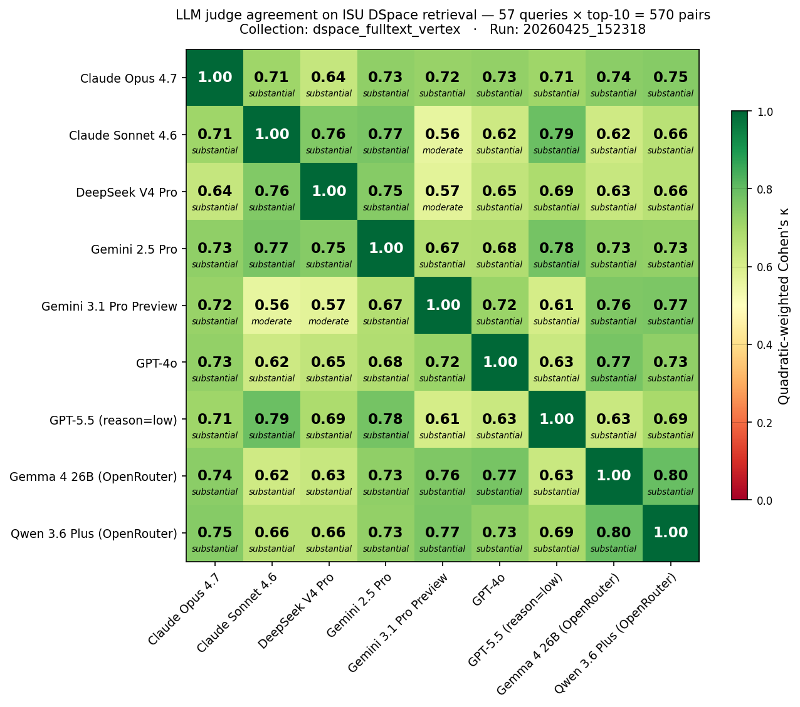
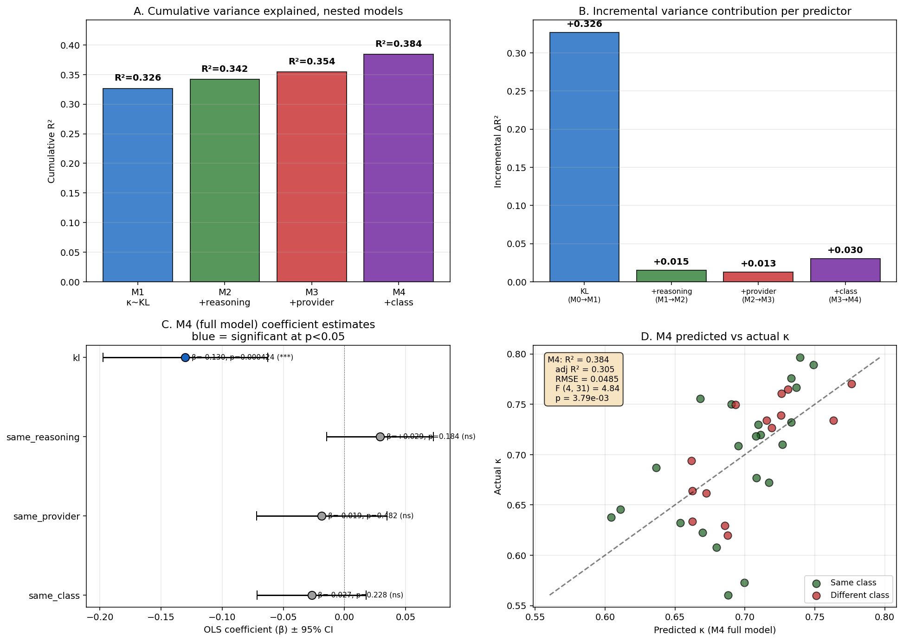
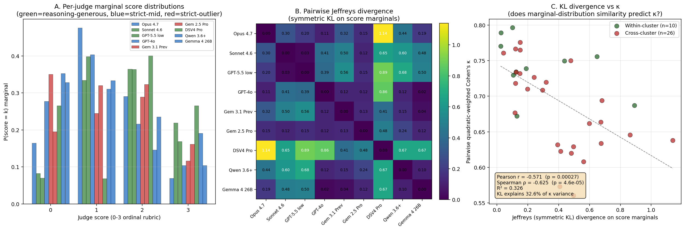

Headline numbers
95% CI [0.43, 0.56]
95% CI [0.24, 0.45]
Four findings
- C1 Cross-family reasoning judges converge at κ ≥ 0.75. Five cross-family pairs reach substantial-or-better κ — well above the 0.4–0.6 typical [Rahmani 2024] and the 0.60 unweighted GPT-4o↔Llama-3.1-405B baseline of [Thakur 2025]. DeepSeek V4 Pro joining the cluster rules out a "Western training data" explanation; the pattern replicates across three independent ablation scales (5/7/9-judge).
- C2 Within-family agreement is bounded by the cross-family ceiling. No within-family pair dominates: Anthropic 0.71, OpenAI 0.63, Google-commercial 0.67, cross-organization Open-weight 0.80. At odds with self-preference findings on open-ended generation [Panickssery 2024]; suggests self-preference is mediated by output-space boundedness, not provider lineage.
- C3 Open-weight judges produce the matrix-highest κ. Qwen 3.6 Plus ↔ Gemma 4 26B = 0.80 — exceeds every commercial within-family pair, ties the cross-family reasoning ceiling. Both open-weight judges cluster with strict-mid commercial models (mean 1.11–1.18) not with reasoning-generous reasoning models (1.63–1.68). At ~$0.30 marginal cost, a free on-prem cross-organization open-weight ensemble outperforms ~$18 of commercial within-family calls.
- C4 Open-source toolkit and disclosure template. We release the multi-judge harness (
eval_llm_judge.py), the external-validation harness (validate_against_trec.py), the cross-run merge tooling, the 57-query REFINE set, the rubric template, all 9 within-corpus per-judge JSONs (5,130 records), and 9 external-validation JSONs (4,833 records).
9-judge κ matrix

Why disclosure matters: a 1.9× spread
The same 570 retrieved documents yield wildly different aggregate verdicts depending only on which LLM judges them. nDCG@10 ranges from 0.45 (Gemini 3.1 Pro Preview) to 0.86 (Sonnet 4.6) — a 1.9× spread driven entirely by judge selection. A practitioner using Sonnet concludes the pipeline is excellent; using Gemini 3.1 Prev, the same pipeline appears broken.
| Judge | Family | nDCG@10 | P@5 | MRR | Mean |
|---|---|---|---|---|---|
| Sonnet 4.6 | Anthropic | 0.862 | 0.649 | 0.826 | 1.68 |
| GPT-5.5 (low) | OpenAI | 0.846 | 0.600 | 0.792 | 1.63 |
| DSV4 Pro | DeepSeek | 0.835 | 0.702 | 0.883 | 1.63 |
| GPT-4o | OpenAI | 0.803 | 0.361 | 0.575 | 1.15 |
| Qwen 3.6 | Open-weight | 0.758 | 0.379 | 0.599 | 1.18 |
| Gemma 4 26B | Open-weight | 0.753 | 0.375 | 0.573 | 1.11 |
| Opus 4.7 | Anthropic | 0.749 | 0.372 | 0.536 | 1.09 |
| Gemini 2.5 Pro | 0.624 | 0.281 | 0.486 | 0.76 | |
| Gemini 3.1 Prev | 0.454 | 0.158 | 0.315 | 0.37 |
Mechanism: joint-distribution structure
What predicts pairwise κ? Joint-distribution structure of paired scores — specifically dispersion (variance product) and effective rank — explains R² = 93% of κ variance. Structural factors (provider, reasoning-mode, model class) are fully mediated: they affect κ only through the joint distribution they induce. The shared-tokenizer hypothesis is refuted: Qwen ↔ Gemma 4 vocabulary Jaccard = 0.066 (lowest in slate) yet κ = 0.80 (matrix-highest) — convergence happens at the decision-making layer, not lexical encoding.


External validation against NIST human qrels
To address single-corpus exposure, we replicated the 9-judge slate on two public benchmarks with NIST/BEIR-curated relevance judgments.
TREC RAG 2024 (537 stratified-balanced pairs, 0–3 ordinal κ)
- Per-judge κ vs human qrels: 0.40–0.55
- 9-judge ensemble median κ = 0.4941 (Landis-Koch moderate, near-substantial)
- 7-judge frontier-only κ = 0.5187 (open-weight broadens coverage, slightly lowers κ — a robustness/headline tradeoff)
- 5 of 9 judges hit κ ≥ 0.47
BEIR scifact (300 pairs, all-positive qrels → precision)
- 9-judge ensemble precision at score ≥ 2: 65.7% (range 43–75% across judges)
TREC-COVID biomedical scientific (300 pairs, 0–2 qrels → 0/2/3 rubric, 9 judges)
- 9-judge ensemble κ vs NIST human qrels: 0.3447 (Landis-Koch fair, near-moderate)
- Frontier-7 ensemble κ for reference: 0.4462 (moderate)
- Per-judge κ range: 0.22–0.53 (Opus 4.7 leads at 0.5323, Gemini 2.5 Pro insufficient overlap due to thinking-mode parse aborts)
- Coverage: Sonnet, GPT-5.5, GPT-4o, Qwen, Gemma all 100%; Opus 84%, DSV4 83%; Gemini 3.1 Prev 44%, Gemini 2.5 Pro 6%
Open-weight broadens coverage but lowers ensemble κ more on biomedical (−0.10) than on web (−0.025 on TREC RAG 2024) — Qwen and Gemma 4 individual κ on biomedical (0.32 / 0.27) trail their TREC RAG 2024 numbers (0.41 / 0.40), suggesting the open-weight headline tradeoff is content-domain dependent. Three independent public corpora — web (TREC RAG 2024), scientific fact-verification (BEIR scifact), biomedical (TREC-COVID) — all return ensemble agreement above chance, with the moderate-band landing on web and the fair-near-moderate band on biomedical.
Validation pipeline replaces a per-institution IRB study (~$1,500–3,000, 6–12 weeks) with public-NIST evidence (~$56, ~13 hours).
Reproduce
Setup
git clone https://github.com/asukul/RAG-Eval-LLM-Judge
cd RAG-Eval-LLM-Judge
pip install -r requirements.txt
cp .env.template .env # add OPENAI_API_KEY + OPENROUTER_API_KEYWithin-corpus replication (your own collection)
py -3 src/eval_llm_judge.py \
--collection <your-collection> \
--judge-preset p4-frontier
# ~$18.30, ~5.5 h wallExternal validation (TREC RAG 2024)
py -3 src/validate_against_trec.py \
--corpus trec-rag-2024 \
--judge-preset p4-frontier \
--max-pairs 537
# ~$35, ~7.5 h wallRegenerate the κ heatmap
py -3 src/make_kappa_heatmap.py \
--input results/<your-multijudge-json> \
--output figures/kappa_matrix_9judge.pngModel versions pinned 2026-04-25. Targeting SIGIR Artifact Badging (Functional/Reusable).
Cite
@inproceedings{sukul2027p4llmjudge,
title = {Cross-Family LLM-Judge Agreement for Institutional RAG:
A 5-Family, 9-Judge Ablation},
author = {Sukul, Adisak},
booktitle = {Proceedings of the LLM4Eval Workshop at SIGIR 2027},
year = {2027},
note = {arXiv preprint forthcoming},
url = {https://github.com/asukul/RAG-Eval-LLM-Judge}
}See CITATION.cff for machine-readable citation metadata.